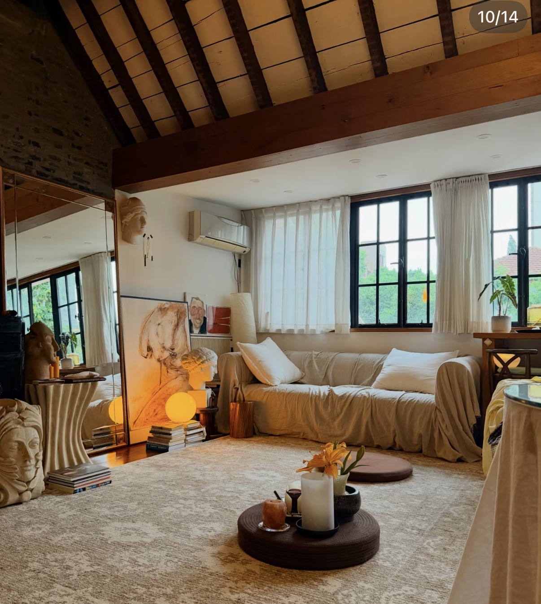
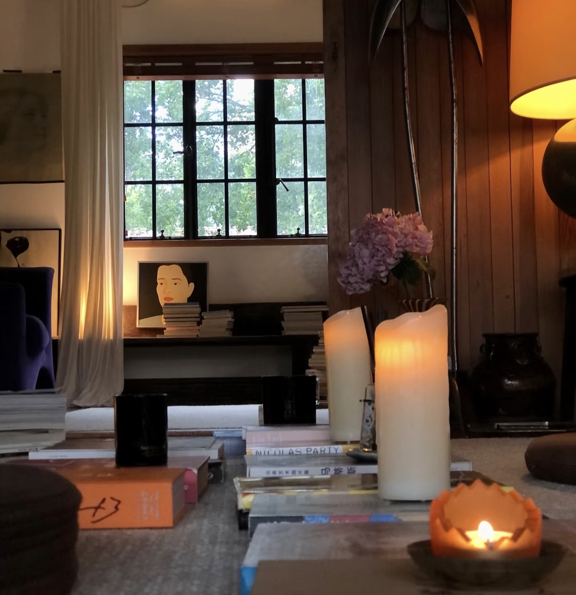
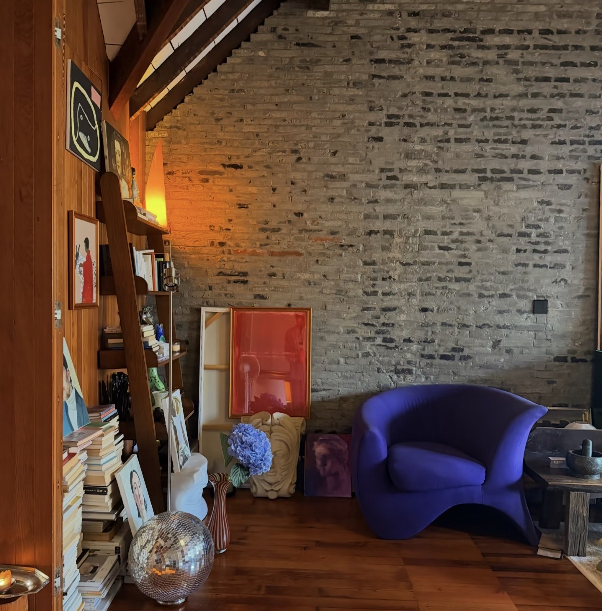
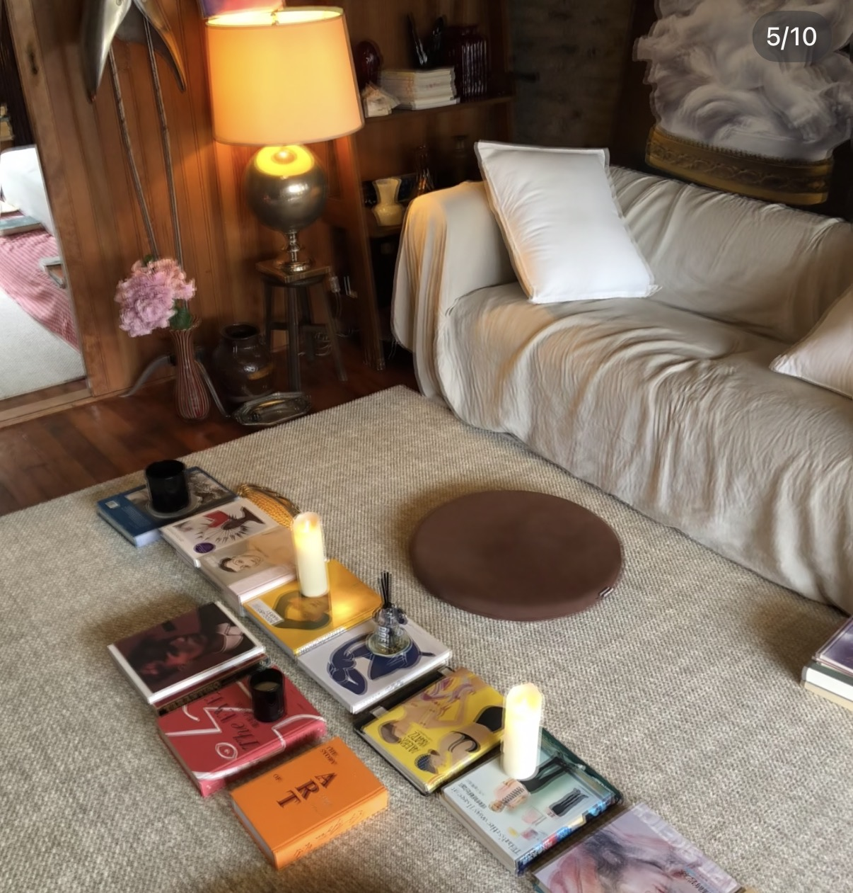
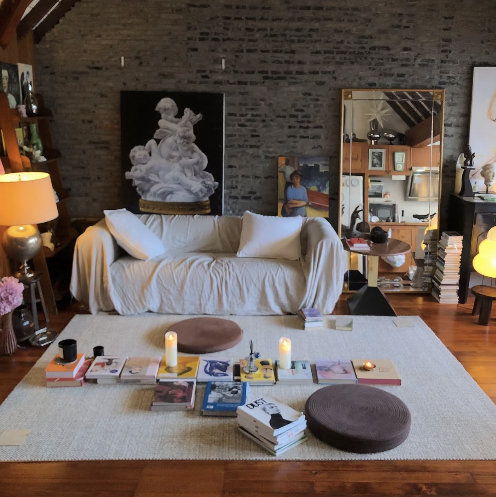
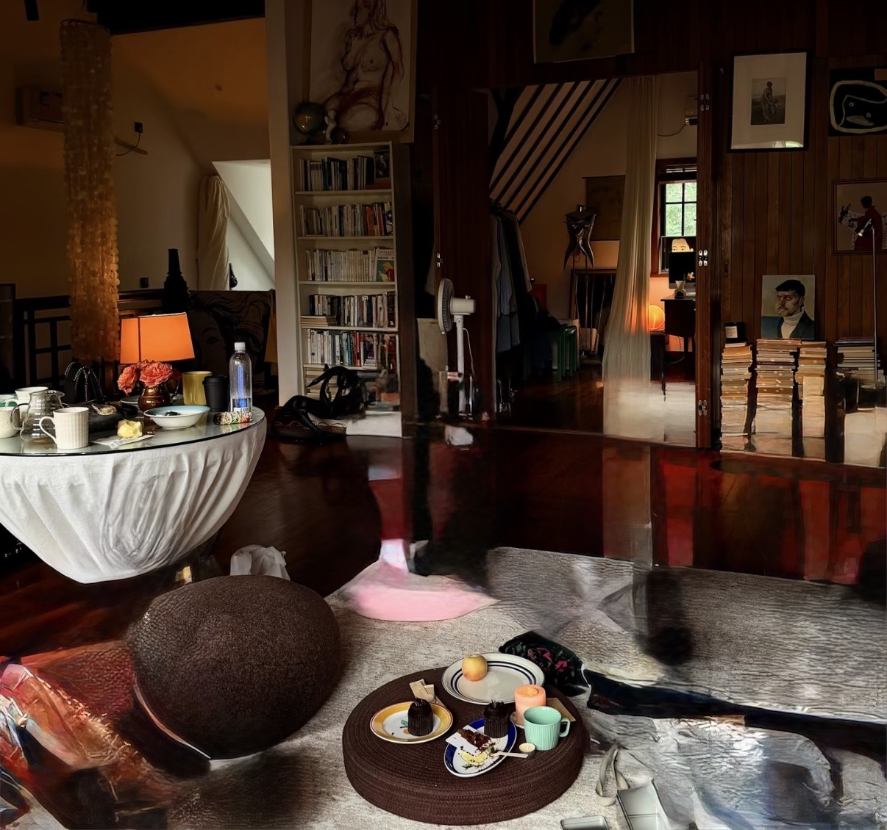
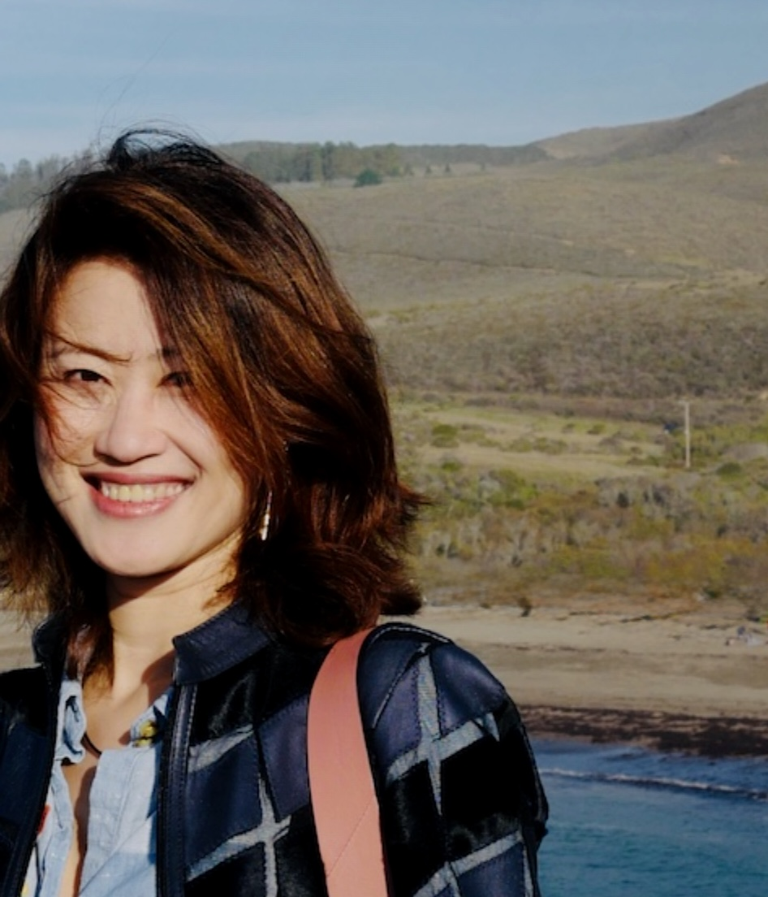

Awakening the
Whole of You
Just as one can wonder whether they are a person dreaming of a butterfly, or a butterfly dreaming of being a person, life often invites us to question old stories and awaken to new narratives. In that spaciousness, you gently reauthor your own story as a whole, authentic being.
I am with you.
Book Free ConsultationMeet Jinchen Yu
Expertise in Narrative Therapy, Culturally Responsive Counseling, and Parenting Coaching
見習心理諮商師 俞今晨
擅長敘事治療、注重文化背景的諮商與親子教養指導
Approach
Navigating the River of Your Story
Like a river that has traveled through mountains and valleys, carrying both the wisdom of its origins and the openness of new landscapes, your life holds many stories. In the Daoist / 道 spirit of flowing with the water, yielding yet powerful, receptive, and ever-moving, I walk beside you. I bring together narrative therapy and gentle bicultural insight to support you in reconnecting with your authentic voice, nurturing emotional resilience, and gently guiding the river of your life toward a kinder, more hopeful flow.
Qi / 氣 is empty and open, receptive to things as they are. This philosophy is embedded in my warm, compassionate, and deeply respectful approach. Whether we speak in Mandarin/中文 or English, I am here with care and presence, accompanying you as you seek authenticity, balance, and the natural unfolding of your next chapter.
Services
Hybrid Sessions Held in Privacy and Presence
In-office sessions offer a quiet, grounded space for your exploration and growth, while telehealth provides the same warmth and presence from the comfort of your home. Every session is a one-on-one experience centered on your needs, at your own pace. Your privacy and confidentiality remain fully in your hands.
The room
A space for slowing down, listening inward, and being received as you are.






Consultation
Free Consultation
It takes a lot of courage to ask for help and to be vulnerable in front of a stranger. I appreciate the opportunity to connect with you. To schedule your free 20–30 minute consultation, please reach out in the way that feels most comfortable:
- Text or Call: (510) 386-2951
- Email: jinchen.therapy@gmail.com
- Contact Form: on left, do not include sensitive personal information
Availability
- Virtual Sessions: Mondays & Tuesdays
- In-Person Sessions: Wednesdays & Thursdays
Training
Grounded in counseling, psychology, parenting education, and narrative care.
- California State University, Fullerton — M.S. in Counseling, 2024 to present
- University of California, Los Angeles — B.A. Psychology, specialization in Computing
- Parenting coach training — completed 7-month professional training program
- Online coursework in Narrative Therapy — Dulwich Centre
- Native Mandarin, fluent Fuzhou dialect, fluent professional English
Let’s Connect
Phone: (510) 386-2951
Email: jinchen.therapy@gmail.com
Office Location: 5055 Wilshire Blvd #310, Los Angeles, CA 90036
